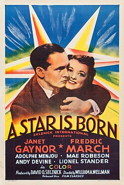

A Star Is Born
10th Academy Awards
(Oscars 1938)
7 Nominations*, 2 Awards*
| Nominations | ||
|---|---|---|
| Category | Nominees | Result |
| Outstanding Production | Selznick International Pictures | Nominated |
| Actor | Fredric March | Nominated |
| Actress | Janet Gaynor | Nominated |
| Directing | William Wellman | Nominated |
| Assistant Director | Eric Stacey | Nominated |
| Writing (Original Story) | Robert Carson and William A. Wellman | Won |
| Writing (Screenplay) | Alan Campbell, Dorothy Parker, and Robert Carson | Nominated |
| Special Award | Won | |